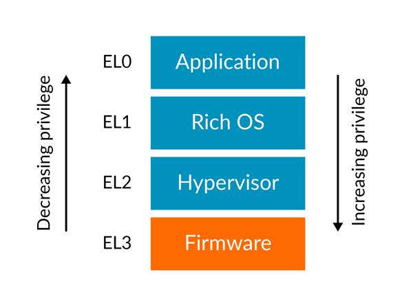
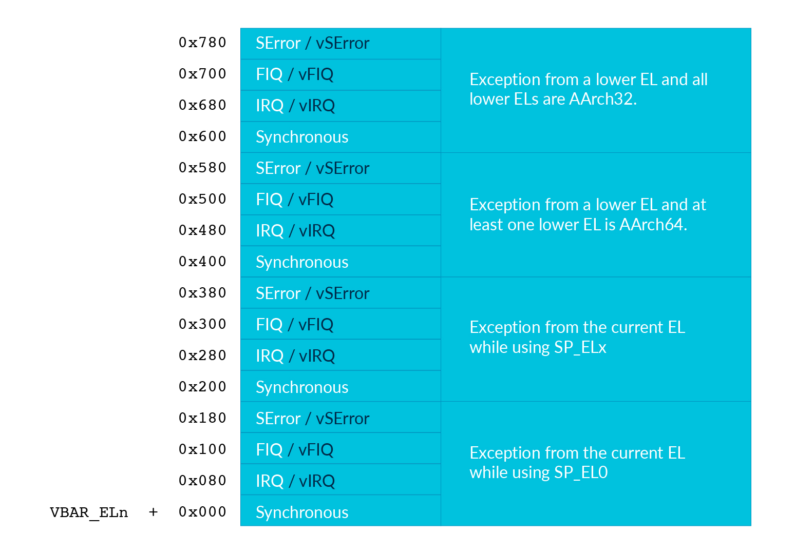

Lab 4: Exception and Interrupt¶
Introduction¶
An exception is an event that causes the currently executing program to relinquish the CPU to the corresponding handler. With the exception mechanism, an operating system can
do proper handling when an error occurs during execution.
A user program can generate an exception to get the corresponding operating system’s service.
A peripheral device can force the currently executing program to relinquish the CPU and execute its handler.
Goals of this lab¶
Understand what’s exception levels in Armv8-A.
Understand what’s exception handling.
Understand what’s interrupt.
Understand how rpi3’s peripherals interrupt the CPU by interrupt controllers.
Understand how to multiplex a timer.
Understand how to concurrently handle I/O devices.
Background¶
Official Reference¶
Exceptions are tightly coupled with the CPU’s design. We only briefly introduce the components needed in this lab. If you want to know the details, please refer to ARM’s official introduction and manual’s Chapter D1(page 1496)
Exception Levels¶
Principle of least privilege limits the resource that a program can access. The limitation reduces possible errors during execution and the attack surface, so the system’s security and stability are increased. Armv8-A’s CPUs follow the principle and implement exception levels, so an operating system can run diverse user applications without crashing the entire system.
Armv8-A has 4 exception levels(ELs). In general, all user programs are run in EL0, and operating systems are run in EL1. The operating system can decrease the exception level and jump to the user program by setting the system registers and execute an exception return instruction. When an exception is taken during a user program’s execution, the exception level is increased, and the CPU will jump to the exception handler.
Exception Handling¶
When a CPU takes an exception, it does the following things.
Save the current processor’s state(PSTATE) in SPSR_ELx. (x is the target Exception level)
Save the exception return address in ELR_ELx.
Disable its interrupt. (PSTATE.{D,A,I,F} are set to 1).
If the exception is a synchronous exception or an an SError interrupt, save the cause of that exception in ESR_ELx.
Switch to the target Exception level and start at the corresponding vector address.
After the exception handler finishes, it issues eret to return from the exception.
Then the CPU,
Restore program counter from ELR_ELx.
Restore PSTATE from SPSR_ELx.
Switch to the corresponding Exception level according to SPSR_ELx.
Vector Table¶
As mentioned above, the CPU starts its execution at the corresponding vector address. The address is defined as the following vector table, and the base address of the table is saved in VBAR_ELx.
The left part of the table is the cause of an exception. In this lab, we only focus on Synchronous and IRQ exceptions. The right part of the table is the relationship between the EL that the exception happens and the EL that it targets. In this lab, we only focus on the case that the kernel takes exceptions(EL1 -> EL1) and 64bit user programs take exceptions(EL0 -> EL1). Also, we want the kernel and user programs using different stacks(use SP_ELx). Therefore, it corresponds to the table’s
Exception from the currentEL while using SP_ELx
and
Exception from a lower EL and at least one lower EL is AARCH64.
Interrupts¶
Besides computing, the CPU also needs to control I/O devices. I/O devices are not always ready. Hence, the CPU needs to check the device’s status and readiness before processing an I/O device’s data.
In previous labs, you did it by busy polling the devices. However, redundant polling wastes CPU time. Also, the CPU may not handle an I/O device’s data immediately right after the device is ready. It may lead to the I/O device’s underutilization or data loss.
Interrupts as an alternative way allow I/O devices to inform the CPU when they’re ready. Then, the CPU can do the device’s handler to process the data immediately. Besides, interrupt forces the current running process relinquishes the CPU’s control. Therefore, any process can’t run with indefinite time.
Interrupt Controllers¶
Rpi3 has two levels of interrupt controllers. The first level controller routes interrupt to each CPU core, so each CPU core can have its own timer interrupt and send interrupt processor Interrupts between each other. The details could be found in
https://github.com/raspberrypi/documentation/blob/master/hardware/raspberrypi/bcm2836/QA7_rev3.4.pdf
The second level controller routes interrupts from peripherals such as UART and system timer, they are aggregated and send to the first level interrupt controller as GPU IRQ. The details could be found in
https://cs140e.sergio.bz/docs/BCM2837-ARM-Peripherals.pdf (page 109)
Critical Sections¶
A critical section is a code segment that can’t be executed concurrently. When interrupts are enabled, the CPU can be interrupted when it’s accessing some shared data. If the interrupt handler also accesses the data, the data may be corrupted. Therefore, the kernel needs to protect the shared data.
In the required part, interrupts are only enabled in user programs(EL0). Hence, your kernel doesn’t need to handle it.
In the elective part, your kernel should enable interrupts. Hence, you should either
disable the CPU’s interrupt temporarily in critical sections to prevent concurrent access in the interrupt handlers.
limit interrupt handlers from calling part of the APIs that access the shared data.
Required¶
Requirement 1¶
Exception Level Switch¶
EL2 to EL1¶
Rpi3’s CPU runs in EL2 after booted by default, but we want the kernel to run in EL1. Hence, your kernel needs to switch to EL1 at the beginning.
You can use the following code to switch from EL2 to EL1.
It configures hcr_el2 so EL1 runs in AARCH64.
Then it sets spsr_el2 and elr_el2, so the CPU can return to the target address with the correct PSTATE after eret.
...
bl from_el2_to_el1
# the next instruction runs in EL1
...
from_el2_to_el1:
mov x0, (1 << 31) // EL1 uses aarch64
msr hcr_el2, x0
mov x0, 0x3c5 // EL1h (SPSel = 1) with interrupt disabled
msr spsr_el2, x0
msr elr_el2, lr
eret // return to EL1
required 1-1 Switch from EL2 to EL1 .
EL1 to EL0¶
After the kernel is initialized, it can load user programs and execute them in EL0 by eret.
You need to add a command to your shell that can
load a user program in the initramfs to a specific address.
set
spsr_el1to0x3c0andelr_el1to the program’s start address.set the user program’s stack pointer to a proper position by setting
sp_el0.issue
eretto return to the user code.
required 1-2 Add a command that can load a user program in the initramfs. Then, use eret to jump to the start address.
Hint
You can use QEMU and GDB to check if you do it correctly.
EL0 to EL1¶
The user program can go back to EL1 by taking an exception.
But you need to set up the exception vector table first.
You can use the following vector table and set vbar_el1 to its address.
exception_handler:
...
.align 11 // vector table should be aligned to 0x800
.global exception_vector_table
exception_vector_table:
b exception_handler // branch to a handler function.
.align 7 // entry size is 0x80, .align will pad 0
b exception_handler
.align 7
b exception_handler
.align 7
b exception_handler
.align 7
b exception_handler
.align 7
b exception_handler
.align 7
b exception_handler
.align 7
b exception_handler
.align 7
b exception_handler
.align 7
b exception_handler
.align 7
b exception_handler
.align 7
b exception_handler
.align 7
b exception_handler
.align 7
b exception_handler
.align 7
b exception_handler
.align 7
b exception_handler
.align 7
set_exception_vector_table:
adr x0, exception_vector_table
msr vbar_el1, x0
Note
The vector table’s base address should be aligned to 0x800
Exception Handling¶
After setting the vector table, loads the following user program.
The user program takes an exception by the svc instruction which is used for system calls.
The design of system calls is left to the next lab.
Now, your kernel only needs to print the content of spsr_el1, elr_el1, and esr_el1 in the exception handler.
.section ".text"
.global _start
_start:
mov x0, 0
1:
add x0, x0, 1
svc 0
cmp x0, 5
blt 1b
1:
b 1b
required 1-3 Set the vector table and implement the exception handler.
Context saving¶
You may find that the above user program behaves unexpectedly. That’s because the user program and the exception handler share the same general purpose registers bank. You need to save them before entering the kernel’s function. Otherwise, it may be corrupted.
You can use the following code to save registers before entering the kernel and load them before exiting the kernel.
// save general registers to stack
.macro save_all
sub sp, sp, 32 * 8
stp x0, x1, [sp ,16 * 0]
stp x2, x3, [sp ,16 * 1]
stp x4, x5, [sp ,16 * 2]
stp x6, x7, [sp ,16 * 3]
stp x8, x9, [sp ,16 * 4]
stp x10, x11, [sp ,16 * 5]
stp x12, x13, [sp ,16 * 6]
stp x14, x15, [sp ,16 * 7]
stp x16, x17, [sp ,16 * 8]
stp x18, x19, [sp ,16 * 9]
stp x20, x21, [sp ,16 * 10]
stp x22, x23, [sp ,16 * 11]
stp x24, x25, [sp ,16 * 12]
stp x26, x27, [sp ,16 * 13]
stp x28, x29, [sp ,16 * 14]
str x30, [sp, 16 * 15]
.endm
// load general registers from stack
.macro load_all
ldp x0, x1, [sp ,16 * 0]
ldp x2, x3, [sp ,16 * 1]
ldp x4, x5, [sp ,16 * 2]
ldp x6, x7, [sp ,16 * 3]
ldp x8, x9, [sp ,16 * 4]
ldp x10, x11, [sp ,16 * 5]
ldp x12, x13, [sp ,16 * 6]
ldp x14, x15, [sp ,16 * 7]
ldp x16, x17, [sp ,16 * 8]
ldp x18, x19, [sp ,16 * 9]
ldp x20, x21, [sp ,16 * 10]
ldp x22, x23, [sp ,16 * 11]
ldp x24, x25, [sp ,16 * 12]
ldp x26, x27, [sp ,16 * 13]
ldp x28, x29, [sp ,16 * 14]
ldr x30, [sp, 16 * 15]
add sp, sp, 32 * 8
.endm
exception_handler:
save_all
bl exception_entry
load_all
eret
required 1-4 Save the user program’s context before executing the exception handler.
Requirement 2¶
Core Timer Interrupt¶
Rpi3’s each CPU core has its core timer. It can be configured by the following system registers.
cntpct_el0: The timer’s current count.
cntp_cval_el0: A compared timer count. Ifcntpct_el0>=cntp_cval_el0, interrupt the CPU core.
cntp_tval_el0: (cntp_cval_el0-cntpct_el0). You can use it to set an expired timer after the current timer count.
To enable the timer’s interrupt, you need to
set
cntp_ctl_el0to 1.unmask the timer interrupt from the first level interrupt controller.
you should enable the CPU core’s interrupt.
In the required part, you only need to enable interrupt in EL0.
You can do it by setting spsr_el1 to 0 before returning to EL0.
You can use the following code to enable the core timer’s interrupt.
#define CORE0_TIMER_IRQ_CTRL 0x40000040
core_timer_enable:
mov x0, 1
msr cntp_ctl_el0, x0 // enable
mrs x0, cntfrq_el0
msr cntp_tval_el0, x0 // set expired time
mov x0, 2
ldr x1, =CORE0_TIMER_IRQ_CTRL
str w0, [x1] // unmask timer interrupt
core_timer_handler:
mrs x0, cntfrq_el0
msr cntp_tval_el0, x0
required 2 Enable the core timer’s interrupt. The interrupt handler should print the seconds after booting and set the next timeout to 2 seconds later.
Hint
You can get the seconds after booting from the count of the timer(cntpct_el0) and the frequency of the timer(cntfrq_el0).
Elective¶
Enable Interrupt in EL1¶
In the elective part, it’s required to enable interrupts in EL1. You can only disable interrupts to protect the critical sections. You can use the following code to enable/disable interrupts.
// enable interrupt
msr DAIFClr, 0xf
// disable interrupt
msr DAIFSet, 0xf
Note
This part is the dependency of the following elective parts, but it doesn’t count in your score.
Rpi3’s Peripheral Interrupt¶
In this elective part, you need to implement rpi3’s mini UART’s interrupt handling. Then, you don’t have to busy polling the UART device.
Enable mini UART’s Interrupt.¶
To enable mini UART’s interrupt,
you need to set AUX_MU_IER_REG(0x3f215044) and the second level interrupt controller’s Enable IRQs1(0x3f00b210)’s bit29.
Determine the Interrupt Source¶
When the UART’s interrupt is enabled, there is more than one interrupt source to the CPU. Hence, your kernel needs to check the source of the interrupt before executing the corresponding interrupt handler. Please refer to both interrupt controllers’ manuals to determine the interrupt source.
Asynchronous Read and Write¶
In previous labs, your shell blocks the execution by busy polling the UART when it needs to read or write. Now, you can create a read buffer and a write buffer. Your shell writes bytes to the write buffer when it prints a message. The data is sent asynchronously by the UART’s TX interrupt handler. Also, the UART’s RX interrupt handler put data in the read buffer. The shell reads bytes array from the buffer and gets the number of bytes it read.
elective 1 Implement the asynchronous UART read/write by interrupt handlers.
Note
You don’t have to replace all print functions to the asynchronous version.
Timer Multiplexing¶
Timers can be used to do periodic jobs such as scheduling and journaling and one-shot executing such as sleeping and timeout. However, the number of the hardware timer is limited. Therefore, the kernel needs a software mechanism to multiplex the timer.
One simple way is using a periodic timer. The kernel can use the tick period as the time unit and calculate the corresponding timeout tick. For example, suppose the periodic timer’s frequency is 1000HZ and a process sleeps for 1.5 seconds. The kernel can add a wake-up event at the moment that 1500 ticks after the current tick.
However, when the tick frequency is too low, the timer has a bad resolution. Then, it can’t be used for time-sensitive jobs. When the tick frequency is too high, it introduces a lot of overhead for redundant timer interrupt handling.
Another way is using a one-shot timer. When someone needs a timeout event, a timer is inserted into a timer queue. If the timeout is earlier than the previous programed expired time, the kernel reprograms the hardware timer to the earlier one. In the timer interrupt handler, it executes the expired timer’s callback function.
In this elective part, you need to implement the timer API that a user can register the callback function when the timeout using the one-shot timer(the core timer is a one-shot timer). The API and its use case should look like the below pseudo code.
# An example API
def add_timer(callback(data), after):
...
# An example use case
def sleep(duration):
add_timer(wakeup(current_process), duration)
To test the API, you need to implement the shell command setTimeout MESSAGE SECONDS.
It prints MESSAGE after SECONDS with the current time and the command executed time.
elective 2 Implement the setTimeout command with the timer API.
Note
setTimeout is non-blocking. Users can set multiple timeouts.
The printing order is determined by the command executed time and the user specified SECONDS.
Concurrent I/O Devices Handling¶
The kernel needs to handle a lot of I/O devices at the same time. For devices(e.g. UART) that have a short period of process time, the kernel can finish their handlers immediately right after they’re ready. However, for those devices(e.g. network interface controller) that require a longer time for the follow-up processing, the kernel needs to schedule the execution order.
Usually, we want to use the first come first serve principle to prevent starvation. However, we may also want prioritized execution for some critical handlers. In this part, you need to know how to implement it using a single thread(i.e. a single stack).
Decouple the Interrupt Handlers¶
A simpler way to implement an interrupt handler is processing all the device’s data one at a time with interrupts disabled. However, a less critical interrupt handler can block a more critical one for a long time. Hence, we want to decouple the interrupt handler and the actual processing.
This can be achieved by a task queue. In the interrupt handler, the kernel
masks the device’s interrupt line,
move data from the device’s buffer through DMA, or manually copy,
enqueues the processing task to the event queue,
does the tasks with interrupts enabled,
unmasks the interrupt line to get the next interrupt at the end of the task.
Those tasks in the queue can be processed when the system is idle. Also, the kernel can execute the task in any order such as FIFO or LIFO.
elective 3-1 Implement a task queue mechanism, so interrupt handlers can add its processing tasks to it.
Nested Interrupt¶
The tasks in the queue can be executed at any time, but we want them to be executed as soon as possible. It’s because that a high-priority process may be waiting for the data.
Therefore, before the interrupt handler return to the user program,
it should execute the tasks in the interrupt context with interrupts enabled (otherwise, critical interrupts are blocked).
Then, the interrupt handler may be nested.
Hence, besides general-purpose registers, you should also save spsr_el1 and elr_el1 so the previous saved data are preserved.
elective 3-2 Execute the tasks in the queue before returning to the user program with interrupts enabled.
Preemption¶
Now, any interrupt handler can preempt the task’s execution, but the newly enqueued task still needs to wait for the currently running task’s completion. It’d be better if the newly enqueued task with a higher priority can preempt the currently running task.
To achieve the preemption, the kernel can check the last executing task’s priority before returning to the previous interrupt handler. If there are higher priority tasks, execute the highest priority task.
elective 3-3 Implement the task queue’s preemption mechanism.